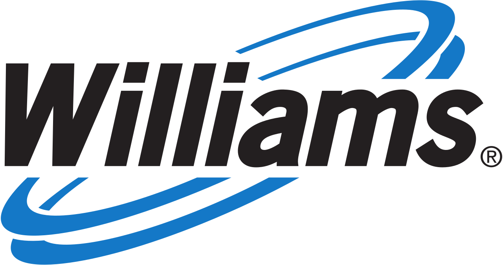

Vol. I · No. 42 · Monday, June 29, 2026 · 14 items · ~15 min read
Iran fires missiles and drones at U.S. bases in Kuwait and Bahrain and a fragile ceasefire teeters; the central banks' central bank warns the AI spending boom may not hold; the Supreme Court closes its term this morning; and the record Saudi-led buyout of Electronic Arts runs up on its deadline week.
The Splash · The World · Manama & Kuwait City · cross-spectrum LLLCLRR
Iran fires missiles and drones at U.S. bases in Kuwait and Bahrain, and a two-week-old ceasefire teeters
A U.S. Navy F/A-18E Super Hornet launches from a carrier in the Persian Gulf; American forces in the Gulf are again exchanging fire with Iran (file photo). — U.S. Navy / Wikimedia Commons, public domain
Iran launched ballistic missiles and drones at two American military installations in the early hours of Sunday, June 28, striking at the Ali Al Salem Air BasePlaceA major U.S. and coalition airbase in Kuwait, roughly 40 kilometers from the Iraqi border and a hub for Gulf air operations. in Kuwait and the headquarters of the U.S. Fifth FleetInstitutionThe U.S. Navy command headquartered in Bahrain, responsible for naval operations across the Persian Gulf and the Strait of Hormuz. in Bahrain. Kuwait said its air defenses intercepted the attack and downed two ballistic missiles; Bahrain reported damage to a residential building near its international airport but no deaths. The barrage answered U.S. strikes the day before, when CENTCOMInstitutionU.S. Central Command, the combatant command covering the Middle East. It conducted the June 27 strikes on Iranian coastal targets. hit roughly ten Iranian targets, surveillance sites, communications nodes, air defenses, and drone storage, along the country's southern coast.
American officials said there were no U.S. casualties or major damage to their facilities, but the regional toll was not zero: a Qatari national was killed by shrapnel and a second person injured during the operations. The strikes broke open the June 17 understandingConceptThe U.S.-Iran memorandum signed at Versailles meant to halt the war and reopen the Strait of Hormuz. The weekend strikes are its first major test. reached at Versailles, the framework meant to end the war and keep the Strait of Hormuz open. Iran's IRGCInstitutionThe Islamic Revolutionary Guard Corps, Iran's elite armed branch, which controls its missile and drone forces and Gulf naval operations. threatened a "complete halt" to the war-ending talks if U.S. attacks continued.
By Sunday evening both sides had agreed to stand down for now and to meet in Doha on Tuesday, with U.S. officials saying the negotiations remained "on track." The pause held into Monday, and U.S. equity futures rose on the de-escalation (see Markets). But the episode showed how thin the line is: a single weekend turned a signed framework into live fire on American bases and back to the table within forty-eight hours, with the world's most important oil corridor hanging on the outcome.
"United States aircraft just struck Iranian missile and drone storage locations ... for violating the Cease Fire Agreement, AGAIN!"
— President Trump, on Truth Social, June 27
Corporate · Basel
The central banks' central bank flags the AI boom as a financial-stability risk
The Bank for International SettlementsInstitutionThe Basel-based "central bank for central banks," founded in 1930. Its Annual Economic Report is among the most closely read official assessments of global financial risk. used its Annual Economic Report, published Sunday, June 28, to name artificial intelligence as one of four pressure points on the global economy, alongside high debt, sticky inflation, and financial fragilities. The five largest hyperscalersConceptThe cloud and compute giants (Microsoft, Google, Amazon, Meta, Oracle) that run data centers at massive scale and account for the bulk of AI capital spending. are on course to commit more than $1 trillion to AI capital spending across 2025 and 2026, the BIS said, with commitments now outpacing earnings and free cash flow and pushing firms toward debt.
Most pointed was the warning on structure: the BIS flagged "circular financingConceptArrangements in which an AI vendor's revenue is effectively funded by its own suppliers or backers, for instance a chipmaker investing in a lab that then buys its chips, which can inflate apparent demand." and "a complex web of private arrangements" linking chipmakers, AI labs, and their backers, financing it called "increasingly leveraged." "Optimism surrounding AI may not last," the report cautioned, invoking the over-investment that has followed previous innovation waves and calling for policy discipline. It is the clearest institutional shot yet at the bull case underwriting the market's biggest names.
Corporate · Redwood City
EA's record $55B take-private reaches its deadline week, with two EU clocks still running
The $55 billion all-cash buyout of Electronic ArtsInstitutionThe publisher behind EA Sports FC, Madden, The Sims, and Battlefield (Nasdaq: EA). The take-private would be the largest leveraged buyout in history. by Saudi Arabia's Public Investment FundInstitutionSaudi Arabia's sovereign wealth fund, the kingdom's main vehicle for foreign investment and the anchor of the EA consortium., Silver Lake, and Affinity Partners, at $210 a share, carries a long-stop close date of June 30, this week. It would be the largest leveraged buyoutConceptAn acquisition financed largely with borrowed money loaded onto the target. The EA deal carries roughly $20 billion of buyout debt. ever, with around $20 billion of debt loaded onto the company.
Two European reviews remain live: an antitrust decision is due July 22, and a separate probe under the EU's Foreign Subsidies RegulationConceptAn EU rule letting Brussels review deals backed by non-EU state subsidies. Here it tests the Saudi sovereign capital behind the EA bid, with a July 30 deadline., triggered by a June 24 Commission filing, has a July 30 deadline to clear the deal or open a full investigation. EA cut staff across the U.S. and India ahead of the close. The deal is a live test of how far state-fund capital can reach into a marquee Western company, and of Brussels's appetite to use its newest tool against it.
Artificial Intelligence
The talent war, and where the frontier is allowed to live
AI · London
DeepMind's talent keeps walking out, and the lab's rivals keep hiring it
Google DeepMind has lost a cluster of senior researchers to OpenAI, Anthropic, and Meta in recent months. — Wikimedia Commons / Google DeepMind
A run of senior departures from Google DeepMindInstitutionAlphabet's combined AI lab, formed by merging DeepMind and Google Brain. It builds the Gemini model family and the AlphaFold protein-structure system. has turned into a pattern, with roughly six researchers gone in about five months, each to a direct competitor. Noam ShazeerPersonA co-author of the 2017 "Attention Is All You Need" paper that introduced the Transformer, and a Gemini co-lead. He departed for OpenAI in June 2026., a Gemini co-lead and co-author of the foundational Transformer paper, left for OpenAI in mid-June; John JumperPersonThe 2024 Nobel laureate in chemistry and co-creator of AlphaFold, who spent roughly nine years at DeepMind before leaving for Anthropic in 2026., the Nobel-winning co-creator of AlphaFoldConceptDeepMind's system for predicting protein structures, whose creators shared the 2024 Nobel Prize in Chemistry., and two Gemini researchers went to Anthropic.
Recruitment data sharpens the picture: by one industry tally DeepMind engineers are far likelier to leave for Anthropic than the reverse, and analysts tie the exodus to a contentious internal "coding pivot" and to a thesis that retention payments buy bodies but not loyalty. The story is not the share price, which already moved, but the structure: the firm that built the Transformer and won a chemistry Nobel is now a net exporter of the people the whole field is bidding for.
AI · Vienna & Brussels
Austria lobbies the EU to give Anthropic a home after U.S. access curbs
Austria's state secretary for digitalization, Alexander Pröll, wrote to European Commission Executive Vice-President Henna VirkkunenPersonThe European Commission's executive vice-president for tech sovereignty and digital policy, and the recipient of Austria's letter on Anthropic. urging member states to explore "the strategic establishment and participation of Anthropic within the European Union," offering "legal certainty, market access, capital and a set of values that suits this company," Bloomberg reported June 28. The pitch is a bid for AI sovereigntyConceptA state's or bloc's drive to host and control frontier-AI capability within its own legal and security perimeter rather than depend on foreign providers.: a European foothold for a leading U.S. lab.
The catalyst was Washington. A June 12 export-control action forced Anthropic to suspend access to its most capable models, Mythos 5ConceptAnthropic's most capable model tier, including its strongest cyber model. U.S. export controls in June 2026 restricted who may use it. and Fable 5, and a June 26 Commerce letter then reopened Mythos 5 to roughly 100 vetted U.S. firms and agencies only, leaving foreign users, and Europe, locked out. Pröll conceded he had not worked out how a relocation would function and acknowledged the skepticism, but the letter is a marker of how U.S. AI controls are now reshaping where allies want the frontier to sit.
Markets & Deals
A pipeline megadeal, and a market that opens on a truce
Corporate · Tulsa
Williams nears a $5.5B deal for Momentum Midstream, the biggest in its history

The Williams Companies is in advanced talks for a roughly $5.5 billion midstream acquisition, its largest ever. — Wikimedia Commons / The Williams Companies
The Williams CompaniesInstitutionA Tulsa-based natural-gas infrastructure giant (NYSE: WMB) and one of the largest U.S. pipeline operators, central to moving gas to Gulf Coast export terminals. is in advanced talks to acquire Momentum MidstreamInstitutionA privately held gas-gathering and processing operator backed by the private-equity firm EnCap Flatrock Midstream, the asset Williams is pursuing. for roughly $5.5 billion, Bloomberg reported over the weekend of June 28, in what would be the largest transaction in Williams's history. The seller is the private-equity firm EnCap Flatrock Midstream; the deal is not final, could be announced within weeks, and could still fall through.
Momentum operates about 4,000 miles of pipeline serving ten LNG facilities and 26 power plants, and would expand Williams's capacity to move HaynesvillePlaceA major shale gas basin in East Texas and northern Louisiana, a key feedstock for Gulf Coast liquefied-natural-gas export terminals. gas to Gulf Coast export terminals. The logic is the midstreamConceptThe segment of the oil-and-gas chain that transports and stores hydrocarbons (pipelines, terminals) between the wellhead and refining or export. build-out around LNG: as U.S. gas exports climb, the pipes that carry the molecules to the coast become the scarce, fee-earning asset, and a clean exit for the private-equity owner that built them.
Markets · New York
Futures rebound on the Gulf truce, into a holiday-shortened week and a hot inflation print
U.S. stock futures climbed Monday, June 29, after the weekend agreement by Washington and Tehran to stand down: Nasdaq-100 futures rose about 1.2%, the S&P 500 about 0.8%, and the Dow about 0.4%. The bounce follows a rough close, with the NasdaqInstitutionThe tech-heavy U.S. equity index. It posted a fifth straight losing session into Friday, June 26, weighed down by the AI trade. notching a fifth straight losing session into Friday on AI-trade jitters. Trading is thinned this week: U.S. markets close Friday, July 3, ahead of the Independence Day holiday.
The macro backdrop stays hawkish. May core PCEConceptThe Federal Reserve's preferred inflation gauge, excluding volatile food and energy. The Fed targets 2%; a 3.4% reading argues against rate cuts., the Fed's preferred inflation gauge, came in at 3.4% year over year, with headline PCE at 4.1%, the highest since 2023, and the June dot plotConceptThe Fed's quarterly Summary of Economic Projections, charting officials' rate and inflation forecasts. June's revised 2026 inflation sharply higher. revised the year-end inflation forecast sharply higher. Rate-cut hopes have faded, leaving a market caught between geopolitical relief and an inflation print that keeps a hike on the table.
Law & the Courts
A term ends, the pay scale climbs, and the firms keep moving south
Law · Washington
The Supreme Court closes its term this morning, with the blockbusters still out
The Roberts Court, expected to hand down its final opinions of the term on Monday, June 29. — Wikimedia Commons / Fred Schilling, Supreme Court
The Supreme Court is expected to issue the last opinions of its term Monday, June 29, with orders at 9:30 a.m. and opinions at 10:00, after the 6-3 conservative majority spent the prior week handing the government a run of immigration wins. As of the weekend, several of the term's biggest cases were still undecided, among them Trump v. Barbara, the challenge to the executive order narrowing birthright citizenshipConceptThe Fourteenth Amendment's guarantee of citizenship to nearly all those born on U.S. soil. The order in Barbara seeks to narrow it., and Trump v. Cook, on whether the president may fire Federal ReserveInstitutionThe U.S. central bank. Trump v. Cook tests whether a governor can be removed before her 14-year term ends, a question central to the Fed's independence. Governor Lisa Cook.
Also pending are West Virginia v. B.P.J. and Little v. Hecox, the transgender-athlete cases, plus mail-in-ballot deadline disputes. Cook tests the limits of for-cause removalConceptA statutory limit barring a president from firing certain officials except for misconduct or neglect. It shields the heads of independent agencies, including the Fed., and a ruling that the president can dismiss a Fed governor would reverberate well beyond this White House. Because the opinions land after this brief was compiled, today's holdings should be checked against the bench as they come down.
Law · New York
The 2026 BigLaw pay war runs on, with Milbank leading and Cravath still quiet
MilbankInstitutionThe New York firm that has now led each of BigLaw's pay raises since 2016, breaking the historic pattern in which Cravath set the scale first. reset the market scaleConceptThe standard associate pay ladder that BigLaw firms adopt in lockstep, first-year through senior associate, so that a single firm's raise can reset compensation across the market. on June 2, taking first-year associate pay to $235,000 and eighth-years to $455,000 effective July 1, a raise of $10,000 to $20,000 across the classes over a ladder flat since 2023. A wave of matches has followed, skewing to elite litigation shops, Quinn Emanuel, Sullivan & Cromwell, McDermott, Hueston Hennigan, Wilkinson Stekloff, among others tracked on Above the Law's running scorecard.
The tell is who has not moved. CravathInstitutionCravath, Swaine & Moore, the firm whose associate-pay "scale" the rest of BigLaw has historically matched in lockstep. Its move ratifies a raise market-wide., the historic market-setter whose name still attaches to the "scale," had not yet matched as the week opened, and much of traditional BigLaw is waiting for it to ratify. That Milbank has now led six straight raises is itself a quiet shift in who sets the price of legal talent.
Law · South Florida · Miami
Kirkland completes its Miami move into 830 Brickell, the South-bound land grab in one tower
Kirkland & EllisInstitutionThe highest-grossing law firm in the world by revenue. Its completed Miami build-out is a marker of BigLaw's expansion into South Florida., the highest-grossing firm in the world, has completed its Miami relocation into 830 BrickellPlaceMiami's first dedicated Class-A office tower in the Brickell financial district, the anchor address for the BigLaw and finance migration to South Florida., the Daily Business Review reported June 24, roughly three and a half years after signing its lease and ultimately taking more than 100,000 square feet across four floors. It joins Am Law 50ConceptThe 50 highest-grossing U.S. law firms by revenue, ranked annually by The American Lawyer. Sidley and Baker McKenzie share Kirkland's tower. peers Sidley Austin and Baker McKenzie in the same building.
The move caps a multi-year push: Kirkland doubled its Miami summer associate class in 2024, and rivals from Quinn Emanuel to Sidley have kept growing locally. For a Greenberg-Traurig-bound reader, the tower is the map of the market, the national firms planting flags in the city where the local bar has long been the deepest.
The World
A disaster's rising toll, and a peace that will not hold
News · Caracas · cross-spectrum LLC
Venezuela's quake toll passes 1,400 as rescuers pull survivors from the rubble
Caracas, among the cities damaged by the June 24 doublet earthquake, where the death toll has climbed past 1,400. — Wikimedia Commons / CC BY-SA
Four days after twin earthquakes struck western Venezuela, the death toll has surged past 1,400, with roughly 3,150 injured and more than 12,700 left homeless, officials said into June 28. The June 24 doubletConceptTwo large earthquakes striking nearly the same place within seconds to hours, the first weakening structures the second then topples. It compounds the damage., a magnitude 7.2 followed 39 seconds later by a 7.5 mainshock centered in San FelipePlaceA city in Yaracuy state in western Venezuela, near the epicenter of the June 24 earthquakes, roughly 100 miles west of Caracas., toppled buildings as far as Caracas. The figure has climbed steeply from the roughly 920 reported earlier in the week, and more than 68,900 people remain listed as missing.
International rescue teams are on the ground, and crews have pulled survivors from the rubble more than three days on, including an infant and a woman trapped since the quake. The UN's migration agency estimates up to 6.8 million people may be affected, and the USGSInstitutionThe U.S. Geological Survey, whose PAGER model estimates likely casualties within hours of a quake. It warns Venezuela's toll could rise far higher. impact model warns the toll could rise much further. The gap between the official count and independent projections is itself the open question as the search continues.
News · Majdal Zoun · cross-spectrum LLC
Israel destroys a Hezbollah tunnel as a U.S.-brokered framework collapses
Israel's military said it destroyed a roughly 200-meter HezbollahInstitutionThe Iran-backed Lebanese militia and political party. It rejected the U.S.-mediated framework and remains in open conflict with Israel along the southern border. tunnel in Majdal ZounPlaceA village in southern Lebanon near the Israeli border, inside the UN peacekeeping zone where the tunnel was found., southern Lebanon, on June 28, saying it contained weapons and rocket-launcher shafts. The strike came a day after Hezbollah rejected the framework that Secretary of State Marco RubioPersonThe U.S. Secretary of State, who announced the June 26 framework for "lasting peace and security" between Israel and Lebanon. announced June 26 for "lasting peace and security."
The sequence, a framework on Friday, a rejection Saturday, a tunnel demolition Sunday, fits the now-familiar rhythm of the 2026 Lebanon war: diplomacy and strikes running in parallel rather than in sequence. Israeli and center coverage cast the operation as enforcement against a rearming Hezbollah; Al Jazeera framed the same day as Israeli "attacks" undercutting the deal.
Entertainment & EASL
A record open at the box office, and an auteur's return
Culture · Los Angeles
Toy Story 5 opens to a franchise-record $160M, the year's biggest debut
Pixar's Toy Story 5 posted an estimated $160 million domestic opening, a franchise record and 2026's biggest. — Wikimedia Commons / Pixar
PixarInstitutionThe Disney-owned animation studio behind the Toy Story franchise. A strong theatrical open is a meaningful signal for Disney's film economics.'s Toy Story 5 opened to an estimated $160 million domestically over the June 26-28 weekend, per Sunday studio estimatesConceptStudios release projected weekend grosses on Sunday; the final "actuals" land Monday and can revise the figure up or down by a few percent., the biggest debut of 2026 and a franchise record that tops Toy Story 4's $120.9 million in 2019. Add $152 million overseas and the global start reaches roughly $312 million, the second-best animated openingConceptAn industry ranking of animated debut weekends. Toy Story 5 trails only Inside Out 2, underscoring the durability of Pixar's marquee franchise. ever.
The film lifted the frame to 2026's first $200 million-plus domestic weekend, with the soft Supergirl debut and smaller openers filling out the chart. Monday actuals were still being finalized. For Disney, a franchise-record open is a reminder that a top-tier theatrical brand still moves audiences at scale even as the rest of the box-office calendar stays uneven.
Culture · Tokyo
A decade after The Last Guardian, Fumito Ueda returns, and leaves Sony's orbit
Fumito UedaPersonThe Japanese game director behind Ico, Shadow of the Colossus, and The Last Guardian, among the medium's most revered auteurs. gen ATLAS is his first game in roughly a decade., the director of Ico, Shadow of the Colossus, and The Last Guardian, gave a wave of interviews dated June 26 around gen ATLAS, his first game in roughly a decade. The single-player action-adventure, made at his independent studio genDESIGN, will be published by Epic Games PublishingInstitutionEpic's third-party publishing arm, which funds outside studios' games and distributes them on the Epic Games Store, an alternative to platform-holder financing. for PlayStation 5, Xbox Series X|S, and PC, with a release date still to come.
The notable turn is structural: an auteurConceptA director whose singular creative vision defines a work. Funding one is a rarer, riskier bet than backing franchise or live-service development. who came up inside Sony's Team Ico is now financed by Epic rather than the platform holder, a sign of where the money for distinctive, non-franchise games is increasingly coming from. "I give my absolute everything because there may not be a next," Ueda told VGC, the line of a director betting a career on a single game.
Compiled by Matthew Yellin · mattyellin.com · Est. May 2026 · A cross-spectrum brief drawn each morning from wires, filings, and the trade press